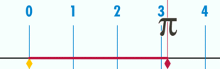

Intégration numérique
Application:
Lien utilisé pour la vérification de pi :
http://www.gecif.net/articles/mathematiques/pi/pi_decimales.html
Structure de l'interface
L'application contient différents champs qui sont détaillés dans ce chapitre:
- Expression à intégrer: l'utilisateur peut saisir l'expression qu'il veut intégrer. Cette expression doit respecter la syntaxe de la bibliothèque Math de JavaScript.
- Borne inférieure : correspond à la borne inférieure de la plage sur laquelle on veut intégrer.
- Borne supérieure : correspond à la borne supérieure de la plage sur laquelle on veut intégrer.
- Nombre d'itération : correspond au nombre d'itération désiré (correspond au n de la formule de Simpson).
- Le bouton "Start Process" lance simplement le calcul et le résultat sera affiché dans la zone de texte en dessous.
Fonctionnement de l'application
Dans un premier temps, les valeurs saisies par l'utilisateur sont récupérées, différents tests sont effectués afin de s'assurer de la validité de ces données.
On lance ensuite le chronomètre qui va mesurer le temps de calcul en microsecondes. Puis on appelle la fonction de calcul de l'intégrale avec pour paramètres la fonction donnée,
l'intervalle et le nombre d'itération.
Une fois cette fonction terminée, le chronomètre est arrêté et les valeurs calculées sont affichées dans la zone de texte.
3 valeurs de pi sont affichées :
- La première représente la valeur approximée avec la méthode de Simpson.
- La deuxième est la valeur de pi de JavaScript (Math.PI).
- La troisième est la valeur de pi utilisée lors des tests et trouvée sur le site (lien plus haut).
PI graphiquement

Sarah Groell, Cyril Jeanneret, Alexandre Serrex - Inf2-dlma